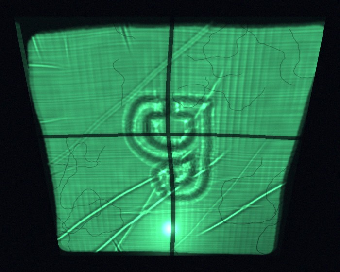
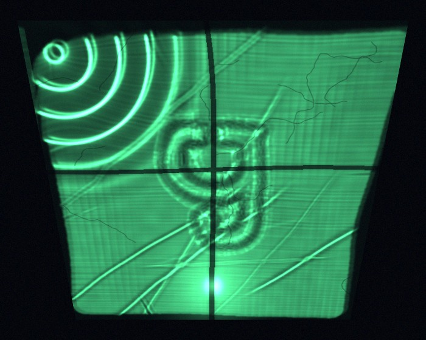
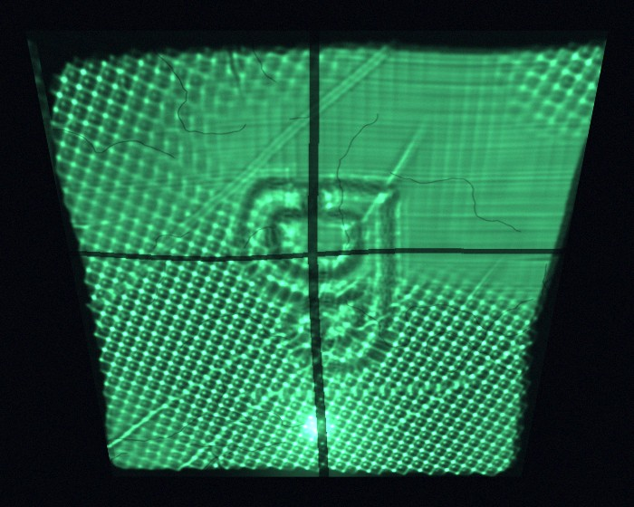

La letra llega a la pared pasando por el agua que a la piscina le falta.
La placa va al fondo de una bandeja con un dedo de agua. La luz rebota en el relieve y en la superficie y cae sobre los azulejos: al revés, abierta en trapecio, verde. El punto quieto es la lámpara reflejada en el agua; también está en los videos de la obra.
Tocada, el agua mete ondas desde una esquina. Con voz, la bandeja vibra con las sílabas del poema y aparecen ondas de Faraday. La voz no se graba ni se codifica: solo deforma.



Tocas el agua y la diosa se deforma.del poema
la misma diosa dos veces
y ninguna igual.del poema
La voz de la simulación es inventada: alturas entre 110 y 220 Hz, con el ritmo silábico del poema.